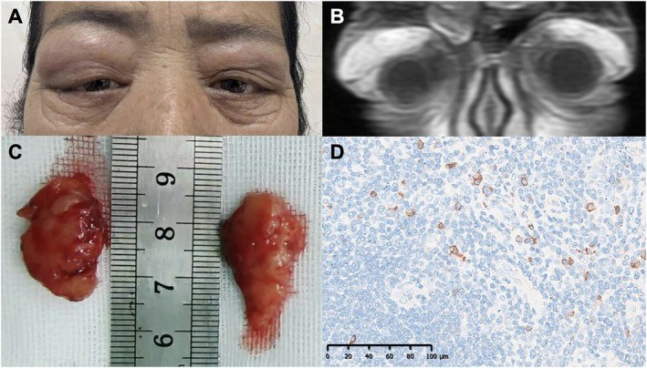

424 — Tuyến lệ: viêm vs u / Dacryoadenitis vs Lacrimal gland tumors
Tags: pattern:tuyen-le vung:hoc-mat
Mức chắc chắn (certainty): tổng hợp y văn (literature synthesis) — nhóm tự biên từ y văn mở, chưa gắn ca nguyên văn đơn lẻ.
1. Tổng quan — tuyến lệ trên-ngoài + IgG4 là thủ phạm hệ thống
- Tuyến lệ nằm trên-ngoài ổ mắt; to ra do viêm (IgG4, sarcoid, Sjögren, GPA) hoặc u (pleomorphic adenoma, adenoid cystic carcinoma).
- IgG4: sưng không đau 2 bên + IgG4 máu tăng (≥ 135 mg/dL) + > 10 tương bào IgG4/HPF + đa cơ quan (tụy, sau phúc mạc). TẠI SAO sinh thiết khi không điển hình: lymphoma cũng to tuyến lệ 2 bên — mô bệnh phân biệt.
- Ngưỡng: IgG4 máu ≥ 135 mg/dL gợi ý; > 10 tế bào/HPF + tỷ lệ IgG4/IgG > 40% củng cố.
2. Gamut tuyến lệ to
- IgG4: không đau + 2 bên + đa cơ quan + đáp ứng steroid (tái phát khi giảm liều).
- Sarcoid/Sjögren: khô mắt/miệng + hạch + ACE/hạch — song hành toàn thân.
- Pleomorphic adenoma: 1 bên + lâu năm + xương lõm (không hủy) — mổ nguyên khối (sinh thiết rạch gây gieo rắc).
- Adenoid cystic carcinoma: 1 bên + đau + lan quanh TK + hủy xương — ác tính, mổ rộng + xạ.
3. Bảng so sánh
| Thực thể (entity) | Hình ảnh | Chốt vào (rule-in) | Chốt loại (rule-out) | Gợi ý xác nhận |
|---|---|---|---|---|
| IgG4 | To 2 bên + không đau + đa cơ quan | IgG4 máu + mô bệnh + đáp ứng steroid | Đau + 1 bên cấp → viêm cấp/u | IgG4, sinh thiết khi không điển hình |
| Pleomorphic | 1 bên + lâu năm + xương lõm không hủy | Lành tính lâu + xương lõm | Hủy xương + đau → ác tính | Mổ nguyên khối, cấm sinh thiết rạch |
| ACC | 1 bên + đau + hủy xương + lan TK | Đau + hủy xương + lan quanh TK | Không đau + xương lõm → pleomorphic | Mổ rộng + xạ bổ trợ |
| Viêm cấp | Đau + 1 bên + sốt/viêm kề | Đau + cấp + viêm kề | Không đau + 2 bên + mạn → IgG4 | Kháng sinh + tìm ổ |

Lâm sàng + MRI coronal tuyến lệ to 2 bên + mô bệnh IgG4. Nguồn: Song et al., Clin Case Rep 2026, CC BY 4.0.4. Protocol
- CT/MRI hốc mắt: tuyến lệ (1/2 bên), xương (lõm vs hủy), TK, xoang.
- IgG4 máu + toàn thân (tụy, thận, sau phúc mạc) khi 2 bên không đau.
- Nghi u: mổ nguyên khối (pleomorphic) — cấm sinh thiết rạch gieo rắc.
5. Cạm bẫy
- Lymphoma tuyến lệ giả IgG4 (2 bên không đau) — không đáp ứng steroid + tuổi già → sinh thiết.
- Sinh thiết rạch pleomorphic gieo rắc tái phát ác tính hóa — nguyên khối từ đầu.
- Khô mắt Sjögren che lấp — hỏi khô miệng + anti-SSA/SSB.
6. Tự lượng giá — Blind Quiz
Ca 1 — Nữ 56 tuổi sưng mi trên 2 bên không đau 3 năm. Đọc ảnh + IgG4 450.
- Hỏi: tuyến lệ to mấy bên? Đau không? IgG4 bao nhiêu? Chẩn đoán + vì sao phải sinh thiết?
Bấm để hiện đáp án
- IgG4 dacryoadenitis: 2 bên không đau + IgG4 450 + > 70 tương bào/HPF — sinh thiết loại lymphoma + steroid (tái phát khi giảm liều thì duy trì).
- Nguồn: Song et al., CC BY 4.0.
Ca 2 — Khối tuyến lệ 1 bên 10 năm + xương lõm không hủy: sinh thiết rạch hay mổ nguyên khối? (Bảng mục 3.)
Bấm để hiện đáp án
- Pleomorphic: mổ nguyên khối — sinh thiết rạch gieo rắc.
Bài liên quan chéo
- 400 – Tổng quan Mắt
- 410 – Giải phẫu hốc mắt (tuyến lệ trên-ngoài)
- 422 – Giả u viêm (IgG4 đa cơ quan)
Không dùng để chẩn đoán độc lập khi chưa có người hướng dẫn.